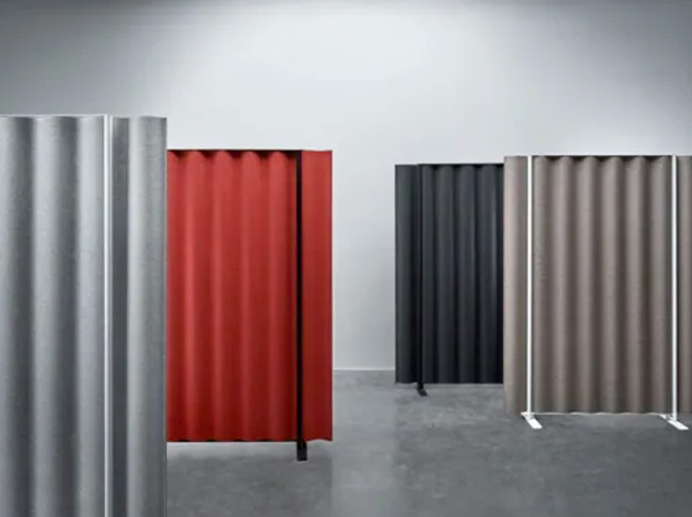
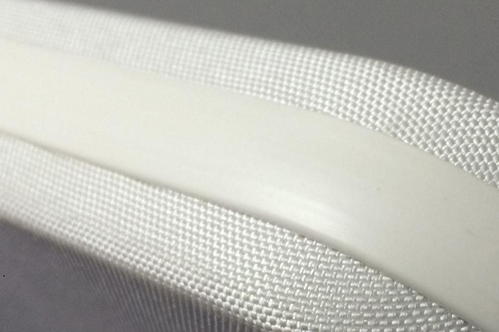
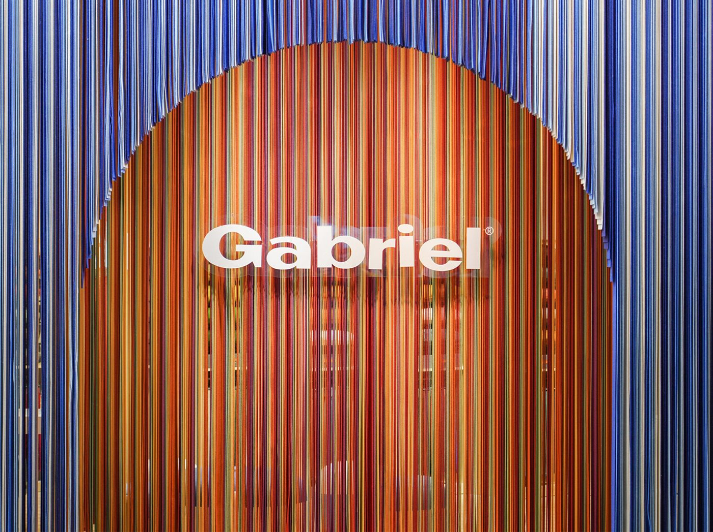
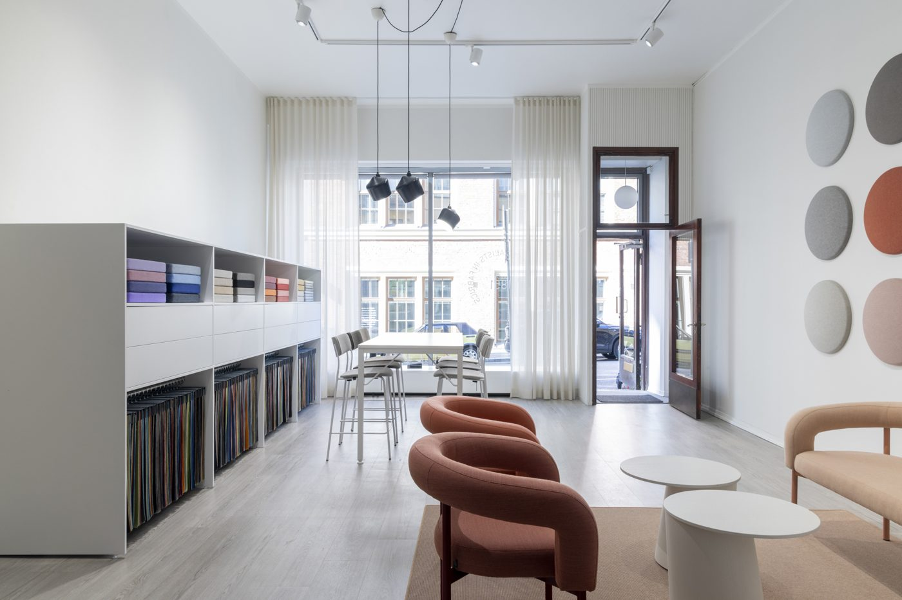
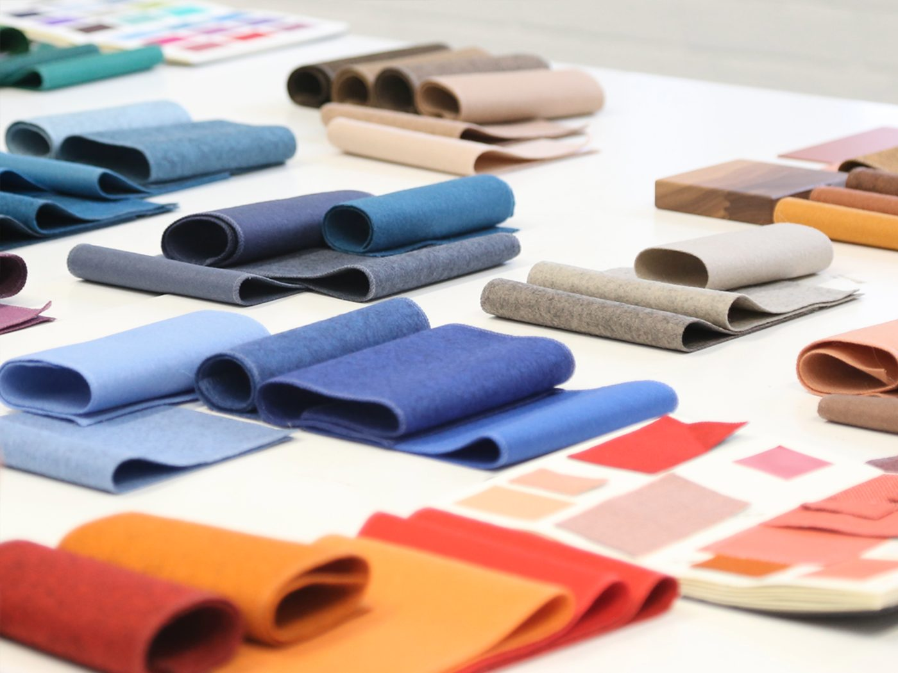
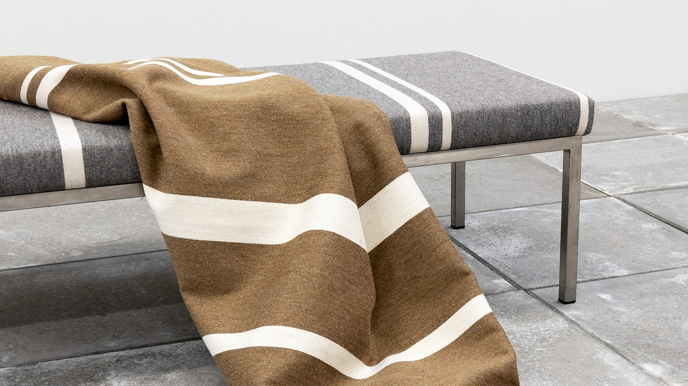

Company study · 2026-11-16
Gabriel
Visual study (mood board) of Gabriel, a Danish furniture-fabric supplier (adapted brief: no consumer line, no campaign models): design and style from its website images.
Mood
Calm, tonal and craft-led. Gabriel is a furniture-textile supplier, so the site shows swatches, yarn, looms, showrooms and people at work rather than fashion models. Soft grays and sand carry the pages, with brick orange and dusty mauve as the only warm notes. Positioning is lasting, trustworthy fabric: heritage since 1851 and technical quality.
 (01)
(01)

(02)

(03)

(04)

(05)

(06)

(07)Palette, measured from the images
#EBEAE8#C4C0C2#D35A41#978990#5E5F60#765B3AVisual themes
01 Swatch color work. Key motifs: overlapping fabric swatches, rolled strips, color cards. Sub motifs: saturated sets (orange, red, blue) next to quiet sand and gray sets.
02 Craft and heritage. Key motifs: looms, yarn cones, mill and factory photographs, a 175th anniversary mark. Sub motifs: archive black-and-white, old computers for color matching.
03 Rooms and acoustics. Key motifs: showroom, screens, panels, sofas and armchairs. Sub motifs: vertical slats and curtain folds.
Color palette (how many images each comes from)
Pale gray #ebeae8. 8 of 10 images (mostly photo grounds).
Fog #c4c0c2. 8 of 10.
Brick orange #d35a41. 3 of 10 (swatches, arch stand, curtain): an accent, not a base color.
Dusty mauve #978990. 6 of 10.
Slate #5e5f60. 3 of 10.
Tobacco #765b3a. 7 of 10.
Interface colors (separate from product colors). #F7F7F7 and #262626 (near-white and charcoal). the interface stays neutral and leaves color to the fabrics. The sand-brown anniversary tile appears only on the 175 page.
Hero material
Gabriel describes itself as specialists in furniture fabrics, from wool upholstery to high-performance and post-consumer recycled fabrics, with knitting, embossing and lamination services (https://www.gabriel.dk/about/fabrics-from-the-very-beginning/, retrieved 2026-11-16).
The look is a dense, matte woven or knit upholstery cloth in muted color. Close-up at (03).
Visual elements
Photography. Bright, even daylight; flat-lay swatches on white, staged showrooms, documentary people-at-work portraits; no models in fashion poses.
Type and graphics. Clean sans, large light headlines; a rounded wordmark; a thin-line 175 anniversary mark.
Layout habits. Home opens on a full-width swatch hero, then wide 4:3 section images with short text blocks; About pages repeat image-text-image in a single column. Hero type is a swatch photograph.
Detail. Binding edges, loom stripes, fold shadows and acoustic pleats show construction.
Copy voice. "Make something that lasts. Make something you can trust." and "Each perspective is distinct. Woven together, they form an exceptional fabric" (https://www.gabriel.dk/about/175-years-anniversary/, retrieved 2026-11-16).
Visual story
swatch hero, group overview, product areas (fabrics, furniture, acoustic comfort), people and showroom, sustainability, then history from the 1851 watermill to the 175th anniversary. trust is built from heritage and process, not from lifestyle. Relation to the themes: Gabriel is a direct fit for T10 (quiet furniture textiles) as the fabric supplier behind it; its construction views (binding, loom, fold) also touch T9 (trace of process), though always in clean form.
Notable products
ShapeKnit. Ready-to-use knitted range named on the products page.
Acoustic comfort screens. Fabric as folded pleats in gray, red and taupe.
Wool blanket and swatch sets. Show the quiet tonal handling most clearly.
Method and limits
Palette basis. ten site images (01, 02, 05, 07, 10, 17, 20, 22, 23, 28: swatches, showroom, acoustic screens, blanket, yarn and color-card photographs from the home and About pages); k-means in Lab, six clusters kept; white page grounds of the swatch photos are part of the measurement; no product-line analysis
Limits. Interface colors come only from inline CSS values on the pages (#F7F7F7 and #262626); the external main.css was not re-read. Image 12 on the home page (a dark graphic) was blank and left out. Gabriel Group also names furniture and components; only fabrics and the site brand were studied. Candidates for a later deeper look only: the knitted ShapeKnit range and the acoustic fabrics. A material specialist and reverse engineering are candidates only.
Image credits
- (01) Flat-lay of wool swatches in blue, green, pink and sand. source (home page, https://www.gabriel.dk/)
- (02) Acoustic screens in gray, red and taupe folds in an office room. source (home page, file acoustic-comfort.png)
- (03) Close-up of a woven fabric edge with a pale binding, cropped from the home page image. source (home page, file ss.jpg, crop)
- (04) Arched stand of vertical stripes with the Gabriel logo, in blue and orange. source (home page, file ap.jpg)
- (05) Bright showroom with sample shelves and rust-brown armchairs. source (home page, file 9398-hr.jpg)
- (06) Rolled and folded fabric strips in blue, taupe, orange and red. source (file 22.png)
- (07) Brown striped wool blanket draped over a gray bench. source (home page, product tile)
Images are the brand's own, shown for study only; each is listed above with its source page.